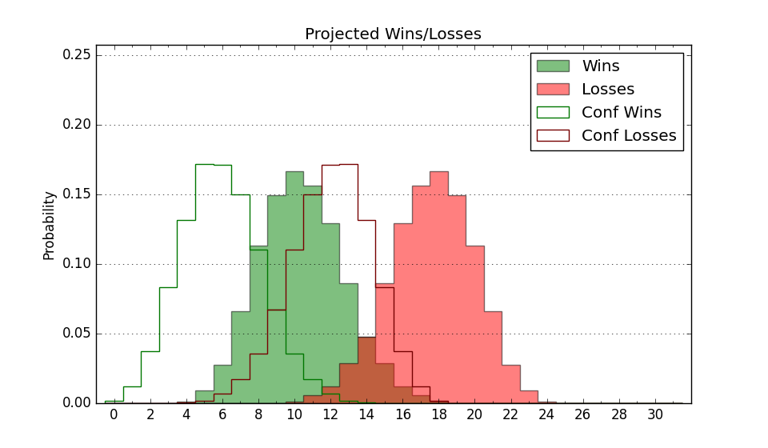

| Home | Game Probabilities | Conferences | Preseason Predictions | Odds Charts | NCAA Tournament |
| City: | San Antonio, Texas | |
| Conference: | American (1st)
| |
| Record: | 0-0 (Conf) 4-5 (Overall) | |
| Ratings: | Comp.: -7.5 (238th) Net: -8.1 (251st) Off: 103.4 (197th) Def: 111.4 (287th) SoR: 0.1 (183rd) |
| Remaining | ||||||
|---|---|---|---|---|---|---|
| Date | Opponent | Win Prob | Pred. | |||
| 12/29 | @ Army (284) | 43.6% | L 77-79 | |||
| 1/4 | @ Tulane (209) | 28.5% | L 76-82 | |||
| 1/7 | Tulsa (298) | 75.7% | W 82-74 | |||
| 1/11 | Wichita St. (101) | 32.1% | L 77-83 | |||
| 1/14 | @ Rice (148) | 19.2% | L 70-80 | |||
| 1/18 | North Texas (68) | 20.0% | L 66-75 | |||
| 1/21 | @ UAB (169) | 23.5% | L 80-89 | |||
| 1/25 | Temple (141) | 43.9% | L 77-79 | |||
| 1/29 | @ Florida Atlantic (79) | 8.2% | L 76-95 | |||
| 2/1 | @ North Texas (68) | 6.9% | L 61-79 | |||
| 2/5 | Tulane (209) | 57.6% | W 80-78 | |||
| 2/8 | East Carolina (168) | 51.1% | W 75-74 | |||
| 2/12 | @ Wichita St. (101) | 12.2% | L 73-88 | |||
| 2/15 | @ Tulsa (298) | 47.8% | L 77-78 | |||
| 2/19 | South Florida (166) | 50.3% | W 80-79 | |||
| 2/23 | @ East Carolina (168) | 23.4% | L 70-78 | |||
| 3/2 | Rice (148) | 44.8% | L 74-75 | |||
| 3/4 | Memphis (30) | 9.7% | L 75-91 | |||
| 3/9 | @ Charlotte (179) | 24.6% | L 71-79 | |||
| Previous | Game Score | |||||
| Date | Opponent | Win Prob | Result | Off | Def | Net |
| 11/12 | @Bradley (69) | 6.9% | L 72-85 | -6.2 | 8.9 | 2.7 |
| 11/16 | Little Rock (256) | 67.9% | L 64-81 | -17.3 | -11.5 | -28.8 |
| 11/25 | @Troy (121) | 15.4% | L 72-86 | 3.8 | -7.6 | -3.8 |
| 11/27 | (N) Merrimack (223) | 46.1% | W 76-74 | -3.7 | 1.4 | -2.3 |
| 11/30 | Houston Baptist (353) | 87.5% | W 78-71 | 2.1 | -1.8 | 0.3 |
| 12/3 | @Saint Mary's (54) | 4.5% | L 74-82 | 4.7 | 11.0 | 15.7 |
| 12/7 | @Arkansas (44) | 4.0% | L 60-75 | 0.5 | 11.1 | 11.6 |
| 12/13 | North Dakota (312) | 78.2% | W 80-76 | -11.4 | 0.3 | -11.1 |
| 12/15 | @North Dakota (312) | 51.3% | W 95-85 | 15.1 | -4.0 | 11.1 |
| Stats & Trends | |||||
|---|---|---|---|---|---|
| Current | Day | Week | Month | Season | |
| Composite | -7.5 | +0.6 | -0.9 | -1.3 | -1.2 |
| Comp Rank | 238 | +12 | -8 | -17 | -16 |
| Net Efficiency | -8.1 | +1.1 | -1.2 | -5.9 | -- |
| Net Rank | 251 | +14 | -13 | -57 | -- |
| Off Efficiency | 103.4 | +1.9 | +0.4 | -2.5 | -- |
| Off Rank | 197 | +26 | -6 | -35 | -- |
| Def Efficiency | 111.4 | -0.9 | -1.6 | -3.4 | -- |
| Def Rank | 287 | -6 | -20 | -52 | -- |
| SoS Rank | 160 | -37 | -102 | -138 | -- |
| Exp. Wins | 10.4 | +0.8 | +0.6 | +1.2 | +0.2 |
| Exp. Conf Wins | 6.0 | +0.2 | -0.2 | +0.1 | -0.0 |
| Conf Champ Prob | 0.0 | -0.0 | -0.1 | -0.4 | -0.7 |

| Advanced Stats | ||
|---|---|---|
| Stat | Value | Rank |
| Off Eff FG % | 0.484 | 238 |
| Off Ast Ratio | 0.117 | 326 |
| Off ORB% | 0.284 | 181 |
| Off TO Rate | 0.154 | 202 |
| Off FT Ratio | 0.323 | 199 |
| Def Eff FG % | 0.528 | 242 |
| Def Ast Ratio | 0.163 | 301 |
| Def ORB% | 0.337 | 327 |
| Def TO Rate | 0.153 | 162 |
| Def FT Ratio | 0.460 | 347 |